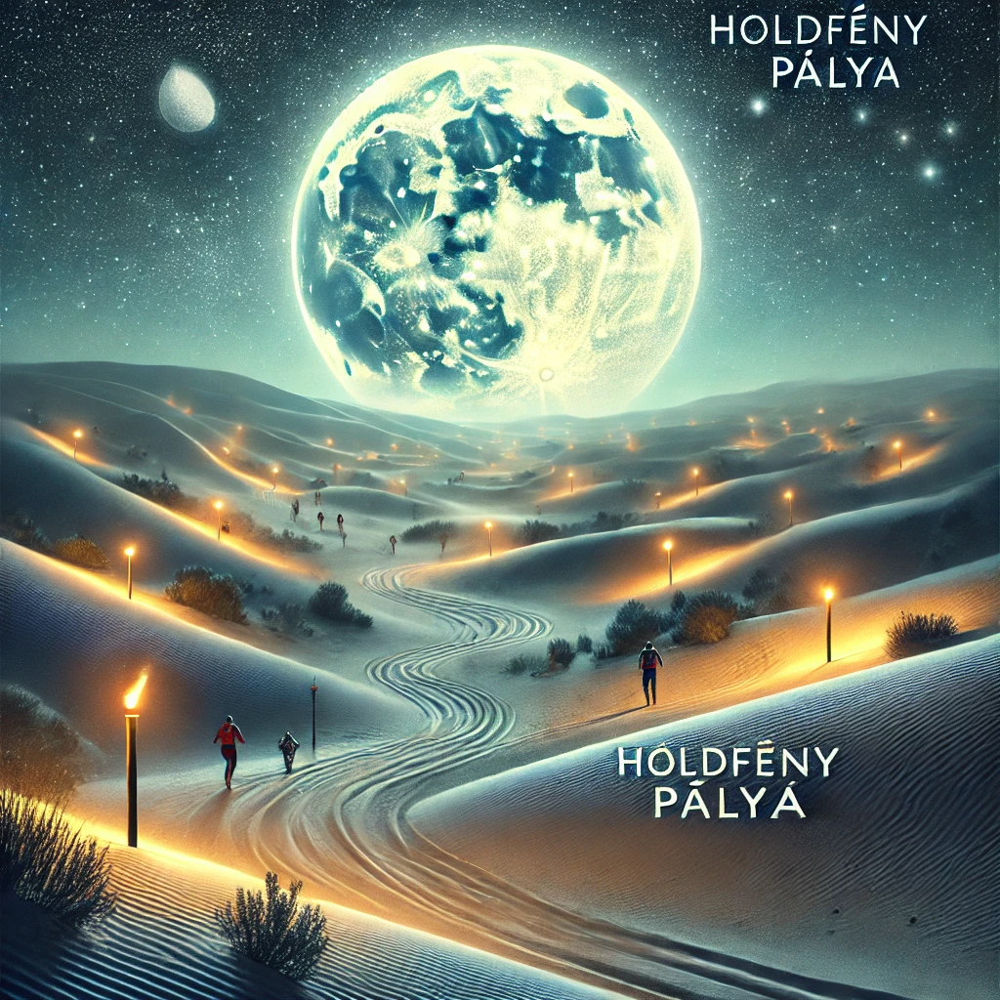

Versenyszabályzat
A verseny biztonságos és tisztességes lebonyolítása érdekében minden résztvevőnek be kell tartania a szabályokat. Olvassa el figyelmesen az alábbi részleteket!
Általános szabályok
A verseny 2024. március 1-jén kezdődik, és a döntők március 3-án zajlanak. A nevezési határidő 2024. február 15.
Minden résztvevő köteles regisztrálni, megfelelni az orvosi követelményeknek, és előre befizetni a részvételi díjat.
Minden versenyzőnek legalább 18 évesnek kell lennie.
Orvosi igazolás szükséges, amely igazolja a versenyző fizikai alkalmasságát.
A jelentkezés határideje előtt minden versenyzőnek regisztrálnia kell az esemény hivatalos oldalán.
Biztonság:
Minden versenyző köteles a versenyzői biztonsági felszerelést viselni.
A mentőcsapatok és az orvosi stáb bármelyik szakaszban beavatkozhatnak, ha úgy ítélik meg, hogy a versenyző veszélyben van.
Fair play:
A versenyzők kötelesek betartani a tisztességes verseny szabályait.
Tilos bármilyen formában akadályozni a többi versenyzőt, vagy csalásra irányuló cselekedetet elkövetni.
Kötelező felszerelések
A versenyzőknek sisakot, térd- és könyökvédőt, valamint megfelelő sportcipőt kell viselniük a verseny során.
Tilos alkoholt vagy drogokat fogyasztani a verseny előtt, alatt, vagy után.
A versenyzők kötelesek magukkal vinni az előírt túrafelszerelést (pl. kötél, sisak).
Egyedül nem mászható szakaszokon a csapattársak vagy a szervezők által biztosított segítséget lehet igénybe venni.
Az időmérés az ellenőrzőpontokon is történik.
Diszkvalifikáció feltételei
A szabályok megszegése, csalás vagy mások veszélyeztetése azonnali kizárást eredményez.
Tilos bármilyen dopping használata.
Bármilyen felszerelés manipulálása vagy a pálya módosítása kizárást eredményez.
A szabályokkal ellentétes magatartás, például a versenybírók utasításainak figyelmen kívül hagyása, azonnali kizárást von maga után.
Versenypályák
A verseny különböző típusú pályákon zajlik, amelyek kihívást jelentenek minden résztvevő számára. A pályák hossza 10 km, és különböző nehézségi szinteket tartalmaznak.
Kaktuszos Kanyon
Keskeny ösvények kaktuszok között.
Technikai kihívások, éles kanyarok.
Nagy Piramis Aréna
Monumentális homokpiramis mászása.
Magas szintű erőnlétet igényel.
Arany Dűne Pálya
Hatalmas, aranyló homokdombok.
Szánkózás, futás a homokban.
Homokvihar Pálya
Széllökések és változó terep.
Kitartás és gyorsaság tesztelése.
Napkapu Aréna
Körpálya izzó nap alatt.
Sprint és taktikai ügyesség.
Homok Csarnok
Beltéri akadálypálya.
Rugalmasságot és pontosságot igényel.
Holdfény Pálya
Éjszakai verseny különleges megvilágítással.
Tájékozódási képességek próbája.
Domboldal Pálya

Meredek domboldal mászása és leereszkedése.
Egyensúly és ügyesség kulcsfontosságú.